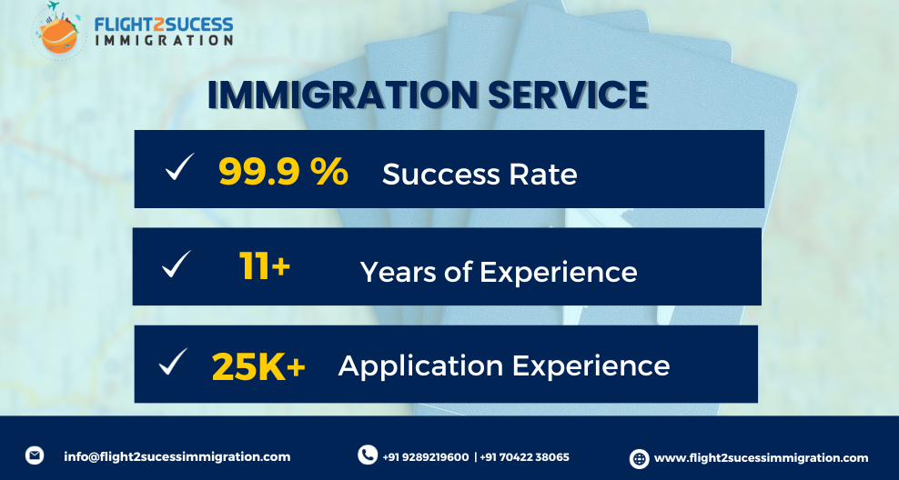

- Contact Us
- Terms & Conditions
- Anti Fraud Policy
- Privacy Policy
- Refund Policy
- Shipping & Return Policy
© 2023 FLIGHT2SUCESS . ALL RIGHTS RESERVED.
Canada is poised to make history with its ambitious plan to set new records for immigration levels. With the release of the Immigration Levels Plan 2024-2026, the Canadian government is set to welcome an unprecedented number of immigrants, solidifying its reputation as one of the most immigrant-friendly nations in the world.
In the next three years, Canada aims to welcome 500,000 new immigrants annually, surpassing any previous immigration targets. This bold move comes in response to the nation's growing labour shortages and the need to propel economic growth. Sectors such as healthcare, technology, and construction are experiencing a significant demand for skilled workers, making immigration a vital solution to address these gaps.
By embracing this influx of newcomers, Canada stands to reap numerous benefits. The expanded workforce will
not only fill critical job vacancies but also contribute to the country's tax base, fuelling the economy and
funding essential government programs and services. Moreover, the increase in immigration levels will
further enrich Canada's multicultural fabric, promoting diversity, innovation, and social cohesion.
The Immigration Levels Plan 2024-2026 prioritizes economic immigrants while also emphasizing family
reunification and humanitarian immigration. Additionally, the Canadian government is committed to enhancing
the immigration system, streamlining application processes, improving processing standards, and supporting
smaller communities in attracting and retaining newcomers.
As Canada sets its sights on these ambitious immigration targets, it reaffirms its commitment to welcoming
individuals from around the world. This historic endeavour will not only strengthen the country's workforce
but also reinforce Canada's reputation as a beacon of inclusivity and opportunity.

As Canada gears up to welcome a record number of immigrants in the coming years, the benefits of increasing immigration levels become more apparent. Beyond addressing labour shortages and stimulating economic growth, this strategic move offers a multitude of advantages for the country.
Addressing Labor Shortages: Canada is currently facing significant labour shortages in crucial sectors such as healthcare, technology, and construction. By attracting skilled immigrants, the country can bridge the gap between job vacancies and a qualified workforce. This not only fills crucial roles but also drives innovation and sustains economic growth.
Economic Boost: Immigrants contribute to Canada's economy by paying taxes and actively participating in the workforce. With increased immigration levels, the tax base expands, providing a sustainable revenue stream for the government. This, in turn, allows for more funding for public services, infrastructure development, and social welfare programs.
Cultural Enrichment: Canada prides itself on being a multicultural nation that celebrates diversity. Increasing immigration levels bring a wealth of cultural experiences, traditions, and perspectives to the country. This enriches Canadian society, fostering a vibrant multicultural environment that promotes tolerance, understanding, and social cohesion.
Family Reunification:
Immigration plays a vital role in family reunification, allowing loved ones to be together in Canada. By
facilitating family sponsorship programs, the country strengthens social networks and support systems,
promoting overall well-being and integration.
Entrepreneurship and Innovation:
Many immigrants possess entrepreneurial skills and a drive for innovation. By attracting talented
individuals, Canada can foster an environment of entrepreneurial success and technological advancement.
Immigrant entrepreneurs create jobs, contribute to economic growth, and enhance Canada's global
competitiveness.
Regional Development:
Increasing immigration levels can help revitalize smaller communities and rural areas across Canada. By
attracting newcomers to these regions, the government can boost local economies, address population decline,
and ensure sustainable growth throughout the country.
For Indian immigrants, Canada's decision to increase immigration levels presents a host of exciting opportunities and benefits. With its inclusive policies, strong economy, and multicultural society, Canada has long been a popular destination for Indians seeking a better future. In this blog post, we will explore what this increase in immigration levels means specifically for Indian immigrants and why it holds significant promise.
Expanding Pathways to Permanent Residency: Canada's immigration system offers various pathways to obtain permanent residency (PR), including Express Entry, Provincial Nominee Programs (PNPs), and Family Sponsorship. With increased immigration levels, Indian immigrants can expect broader opportunities to secure PR status, creating a pathway to a stable and prosperous life in Canada.
Thriving Job Market and Career Opportunities: Canada's growing economy and labour shortages present Indian immigrants with a wide array of job prospects and career opportunities. The increased immigration levels mean more chances to secure employment in sectors where skilled workers are in high demand, such as healthcare, technology, engineering, finance, and more. This opens up avenues for professional growth, higher salaries, and improved quality of life.
Strong Indian Community and Support Networks: Canada boasts a vibrant Indian community, with numerous cultural organizations, community centres, and events that celebrate Indian traditions and heritage. Increased immigration levels will further strengthen this community, providing a sense of belonging, support, and connection to fellow Indians. These networks can offer guidance, mentorship, and assistance in navigating Canadian society and the job market.
Educational Opportunities for Students: Canada is a renowned destination for Indian students seeking quality education and international exposure. With the increase in immigration levels, Indian students can expect more favourable policies, easier pathways to study permits, and enhanced opportunities to pursue higher education in esteemed Canadian institutions. This not only offers access to world-class education but also improves chances of securing post-graduation work permits and eventually transitioning to permanent residency.
Cultural Integration and Multiculturalism: Canada prides itself on its multicultural fabric, embracing diversity and promoting inclusivity. Indian immigrants bring their rich cultural heritage, traditions, and perspectives to this multicultural mosaic. With increased immigration levels, Indian immigrants will find greater opportunities to share their culture, participate in cultural exchange programs, and contribute to Canada's multicultural society, fostering a sense of pride and belonging.
The increase in immigration levels in Canada opens up a world of possibilities for Indian immigrants. From improved pathways to permanent residency and thriving job markets to strong community networks and educational opportunities, the benefits are numerous. As Canada continues to welcome Indian immigrants with open arms, it provides them with a supportive and inclusive environment to thrive, succeed, and contribute to the nation's multicultural tapestry.
The government is working to make the immigration application process more efficient and user-friendly. Enhancing application processing standards: The government is committed to processing immigration applications in a timely and fair manner. Supporting smaller communities in attracting newcomers: The government is providing funding to help smaller communities attract and retain newcomers.
Promoting French-speaking immigration throughout Canada: The government is committed to increasing French-speaking immigration outside of Quebec.
Canada's plan to increase immigration levels is a wise and visionary decision that will help the country to thrive in the years to come. By attracting skilled immigrants, Canada can address labour shortages, stimulate economic growth, enrich its multicultural fabric, and promote innovation. The government's commitment to modernizing and improving the immigration system is also commendable. By taking these steps, Canada is positioning itself to remain a global leader in attracting and retaining talented newcomers.
Canada's ambitious plan to increase immigration levels is a bold and strategic move that offers numerous benefits for the country. Addressing labour shortages, stimulating economic growth, enriching the multicultural fabric, and promoting innovation are just a few of the advantages that this initiative presents.
Addressing labour shortages
Canada is currently facing significant labour shortages in critical
sectors such as healthcare, technology, and construction. By attracting skilled immigrants, the country can
bridge the gap between job vacancies and a qualified workforce. This not only fills crucial roles but also
drives innovation and sustains economic growth.
Stimulating economic growth
Immigrants contribute to Canada's economy by paying taxes and actively participating in the workforce. With
increased immigration levels, the tax base expands, providing a sustainable revenue stream for the
government. This, in turn, allows for more funding for public services, infrastructure development, and
social welfare programs.
Enriching the multicultural fabric
Canada prides itself on being a multicultural nation that
celebrates diversity. Increasing immigration levels bring a wealth of cultural experiences, traditions, and
perspectives to the country. This enriches Canadian society, fostering a vibrant multicultural environment
that promotes tolerance, understanding, and social cohesion.
Promoting innovation
Immigrants are often highly skilled and entrepreneurial individuals who bring
new ideas and perspectives to Canada. This helps to drive innovation and boost economic growth. For example,
immigrant-owned businesses are more likely to innovate than Canadian-owned businesses.
In addition to these key benefits, increasing immigration levels can also help to address population
decline in rural areas, revitalize smaller communities, and promote French-speaking immigration outside of
Quebec.
The Canadian government is committed to making the immigration system more efficient and
user-friendly,
enhancing application processing standards, and supporting smaller communities in attracting newcomers.
These efforts will help to ensure that Canada can reap the full benefits of increased immigration levels.